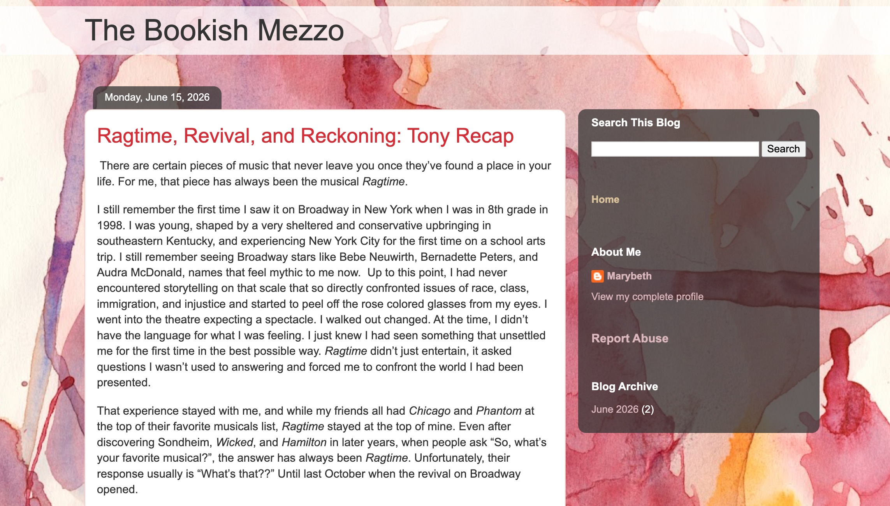

BlogThe Bookish Mezzo - Reflections On Books, Music, Art, and Travel |
The Bookish Mezzo is a space where I share reflections on the books, music, art, and places that have shaped my life. As both an educator and musician, I have always found that stories and music help us better understand ourselves and the world around us. Whether I am discovering a new favorite book, performing on stage, or exploring a new city, each experience offers opportunities for learning, growth, and connection. Through this blog, I hope to celebrate lifelong curiosity and the ways that literature, the arts, and travel enrich our lives and broaden our perspectives.
